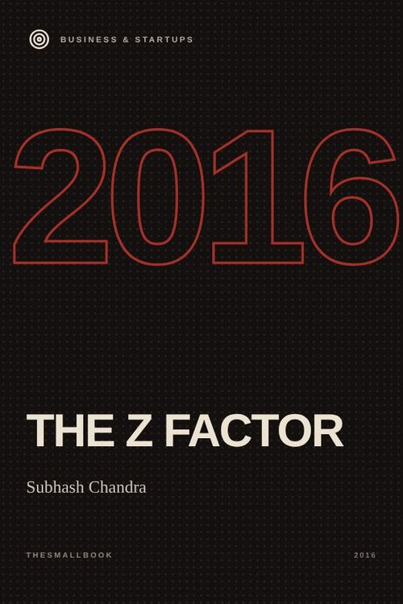

Library › Authors › Subhash Chandra
Books by Subhash Chandra
Subhash Chandra has one book in the library. Every book here is read down to the big idea, the lessons, the lines worth keeping and the actions worth taking. Start with the summary, then buy the full book if it earns a place on your shelf.

The Z Factor
2016 · 9 min · 7 lessons
Subhash Chandra's memoir of building India's first private TV empire - audacious bets, an $11 billion crisis, and the founder's true asset: the ability to rebuild.
Subhash Chandra - the man who built Zee TV from a small-town trading family into India's first private television empire - tells the story of a lifetime of audacious bets. From rice trading in Haryana to launching a Hindi channel when the state monopoly laughed at him, from Essel World to Zee, from DTH to an $11 billion debt crisis and a comeback, Chandra's memoir is a masterclass in Indian entrepreneurship: risk as a way of life, family as both anchor and burden, and the willingness to keep betting when everyone...
Lessons in the summary
- The Bet That Defines You: Zee TV vs the Monopoly
- Family Business: The Gift and the Trap
- The Debt Lesson: What $11 Billion Taught
- The Second Act: Reinvention After the Fall
- The Media Lesson: Content Is Culture
- The Long Game: Patience Is a Founder's Weapon
- Risk Is Not Reckless: The Discipline Behind the Gambles
Lines worth keeping
- The 'impossible' chorus is the sound of incumbents protecting their position.
- Debt is a tool, not an identity - borrow for cash flow, never for ego.
- The founder's true asset is not the empire, but the ability to rebuild one.
Questions Subhash Chandra helps answer
Read nearby authors next
- Devdutt Pattanaik 5 books
- Rashmi Bansal 5 books
- Robin Sharma 5 books
- Chetan Bhagat 4 books
- Seth Godin 4 books
- Alex Hormozi 3 books
- Gurcharan Das 3 books
- Nir Eyal 3 books
Questions Subhash Chandra helps answer
Where should I start with Subhash Chandra? Start with The Z Factor: Subhash Chandra's memoir of building India's first private TV empire - audacious bets, an $11 billion crisis, and the founder's true asset: the ability to rebuild.